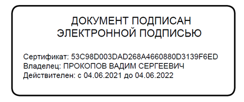

Шестнадцатиричные и двоичные константы (ссылка на статью)
Комментарии:
2019-08-12 alextretyak
Идеи занятные (и с кавычками и со скобками)...
В свою очередь, предлагаю посмотреть на способ записи шестнадцатеричных чисел/констант в языке программирования 11l.
Иногда ещё 10, но в особых случаях.Эм... не совсем понял данное предложение\sentence. Насколько я вижу по реальным проектам, десятичная система счисления является самой востребованной в проектах любого рода. Затем идёт шестнадцатеричная. Двоичная и восьмеричная же практически не используются. [Или тут речь о явном указании на десятичную систему? Т.е. о записи 10'123 вместо просто 123? Такое, конечно, не востребовано, но имхо это просто какая-то глупость {…}.]
Кстати, по хорошему, нужно смотреть примеры реальных проектов/программ, чтобы понять насколько будет удачно/красиво выглядеть тот или иной вариант синтаксиса. {…}
2019-08-14 Автор сайта
Не понятно, что у Вас является признаком шестнадцатеричного числа. Апостроф? Нет, иначе бы 255\\\'000 не было бы десятичным числом.
Кстати, по хорошему, нужно смотреть примеры реальных проектов/программ, чтобы понять насколько будет удачно/красиво выглядеть тот или иной вариант синтаксиса. {…}Читал я Вашу дискуссию с читателями статьи «Каркас нового языка программирования». Вам заметили, что предлагать новый язык программирования имеет смысл, если в этом языке есть новые концепции. Вы ответили, что желание улучшить синтаксис достаточно для того, что новый язык имел право на существование.
В принципе, с Вами можно было бы согласиться, вот только «пространства» для улучшения синтаксиса всё меньше и меньше. Число комбинаций одного и того же набора символов ограничено. Так что без новых концепций новым языкам трудно пробиться.
Вот вам пример лаконичного и красивого синтаксиса. Допустим, в нижеприведённом коде переменной «текущая координата» присвоено значение функции, читающей положение курсора мыши:
текущие координаты = читать координаты курсора ()А если мы хотим установить новые координаты? Обычно это делается так
записать координаты курсора (новые координаты)Если язык поддерживает перезагрузку имён функций, то это может выглядеть короче:
текущие координаты = координаты курсора () // чтение координаты курсора (новые координаты) // записьВыше две разных функции с одинаковым именем имеют разную семантику. Моя идея заключается в том, что эти одноимённые функции могут менять семантику в зависимости от местоположения:
текущие координаты = координаты курсора () // чтение координаты курсора () = новые координаты // запись
2019-08-15 alextretyak
Непонятно, что у Вас является признаком шестнадцатеричного числа. Апостроф? Нет, иначе бы 255\\\'000 не было бы десятичным числом.3 обратных слэша тут лишние, верно?
А признак очень простой — количество цифр, разделённых апострофом. Если 1, 2 или 4, тогда число шестнадцатеричное. Если 3, либо если нет разделителей, то число десятичное. Если оканчивается на ‘b’ или русскую ‘д’, тогда двоичное. Если оканчивается на ‘o’, тогда восьмеричное.
Но благодарю за Вашу реакцию — я подумаю над тем, чтобы добавить это пояснение в документацию языка.
Читал я Вашу дискуссию с читателями статьи «Каркас нового языка программирования»...Ну, со времени написания той статьи много воды утекло. [И с тех пор я во многом поменял своё мнение, в частности, я решил делать больше упор на анализ существующих языков программирования, а также на формирование рационального/логического обоснования для элементов синтаксиса языка, нежели на массовое [и в большинстве случаев — не аргументированное] мнение по тем или иным вопросам, так как мнение любого человека слишком уж завязано на его привычки, и непривычные вещи априори будут восприниматься с отторжением.]
Предлагаю познакомиться с новой статьёй {…}, черновик которой я отправил Вам на почту [можете высказать свои соображения по этой статье здесь же (если это будет уместно), или прошу на форуме (можете написать и эл. письмо, но предупреждаю заранее, что я оставляю за собой право разместить его текст [или его часть] на форуме)].
вот только «пространства» для улучшения синтаксиса всё меньше и меньше. ... Так что без новых концепций новым языкам трудно пробиться.Полностью с Вами согласен.
Вот только число новых/нереализованных значимых/существенных концепций, по-моему, ‘уже близко к [абсолютному] нулю’/‘ещё меньше, чем улучшений синтаксиса’.
Поэтому новый язык [в идеале] должен включить в себя все оставшиеся удачные/подходящие нереализованные идеи по улучшению синтаксиса. А также взять концепции, лучшие из существующих.
Моя идея заключается в том, что эти одноимённые функции могут менять семантику в зависимости от местоположенияТак ведь это уже есть в C++. Оператор
[]в
std::vector<bool>(который на самом деле не массив из
bool, а битовый массив) возвращает прокси объект, который можно читать (за счёт перегрузки operator
bool), и в который можно писать (за счёт перегрузки оператора равно). Чтобы понять как устроен оператор
[]в
std::vector<bool>изнутри, можно по шагам пройти в отладчике такой код:
std::vector<bool> v(1); v[0] = true; bool b = v[0];
И хочу ещё высказаться по поводу возможности разделения идентификаторов пробелом. Лично мне, как и автору, тоже не нравится, что символы подчёркивания бросаются в глаза в именах. Но я вижу другое решение этой проблемы — в IDE/‘среде разработки’ отображать символы подчёркивания в идентификаторах немного по-другому, в таком виде, который не так бросается в глаза:

А если разрешить пробелы в идентификаторах, то, боюсь, будет конфликт с ключевыми словами. Например, у меня в парсере есть переменная
type_name. Но
type nameнаписать уже не получится, так как это корректное объявление нового типа. [Впрочем, об этом автор уже писал, только там приводится пример с ‘int’.]
И к тому же, слышал ли автор что-нибудь про "poetry mode" в Ruby? Там можно написать такое:
puts value # или даже так: puts Integer valueчто является сокращённой записью такого кода:
puts(value) puts(Integer(value))
P.S. Кстати, синтаксис форматирования сообщений/отзывов, разработанный автором, очень даже неплох.
Единственное, для текста программ я бы выбрал (##символы решётки##) или (``обратные апострофы``), а не знаки равенства (равенство больше подходит для обозначения двойного зачёркивания).
2019-08-16 Автор сайта
alextretyak:Так признак, на мой взгляд, не так уж и прост. Но всё относительно. Вы субъективны в своих оценках, а я в своих. «Каждый пишет, как он слышит. Каждый слышит, как он дышит».
А признак очень простой — количество цифр
По поводу статьи я выскажусь чуть позже. Просто пока что зреют мысли.
число новых/нереализованных значимых/существенных концепций, по-моему, «уже близко к абсолютному нулю»Не хотите ли Вы сказать, что уже ничто не ново, всё Вам настолько знакомо, что в каждом новом языке Вы видите отголоски старых?
Так ведь это уже есть в C++.Ну так приведите пример. Как я должен определить функцию
func, чтобы я мог записать:
func() = 123;
Спрятать символ подчёркивания, чтобы он не так бросался в глаза... Зачем? Лучше, если программист увидит «честный» текст. Но пробелы внутри идентификаторов — это вызов, это головоломка для лексического/синтаксического анализа. И тут у каждого простого решения есть свои минусы.
я бы выбрал (##символы решётки##)Я думал ещё и об эргономике. Хотелось, чтобы символы форматирования были на обеих раскладках клавиатуры на одинаковых клавишах. Остался только «!», но это НЗ на тот случай, когда ещё что-то захочется.
2019-08-18 alextretyak
Не хотите ли Вы сказать, что уже ничто не новоНу... я бы немного по-другому сказал. Всё новое — довольно спорно. Взять тот же Rust с его lifetimes/borrowing (я, кстати, до сих пор не могу найти пример хорошего кода на Rust, где эти lifetimes оправданны, все приводимые примеры в статьях по Rust либо надуманны, либо их можно легко переписать на C++ безо всяких lifetimes).
всё Вам настолько знакомо, что в каждом новом языке Вы видите отголоски старых?Отчасти и это тоже.
Но если посмотреть на эволюцию естественных языков, то можно заметить, например, что русский язык существенно не менялся уже более ста лет с реформы 1918 года, и практически/фактически не менялся с 1956 года. А с наступлением цифровой эпохи ни русский, ни английский, никакие другие естественные языки, скорее всего, меняться уже не будут. И я боюсь, что языки программирования постигнет та же участь — они "заморозятся" и их эволюция завершится (также как когда-то завершилась эволюция чисел [ведь, никто не будет спорить с тем, что числа больше не будут эволюционировать? и не только/просто числа, а язык математики, скорее всего, тоже не будет больше эволюционировать!]).
Ну так приведите пример. Как я должен определить функциюfunc, чтобы я мог записать:func() = 123;
#include <iostream>
void func(int i) { std::cout << i; }
class Proxy
{
public:
void operator=(int i) { func(i); }
operator int() {
int r;
std::cin >> r;
return r;
}
};
Proxy func() { return Proxy(); }
int main()
{
func() = 123; // заменяется на func(123)
int i = func(); // возвращает число из cin
}
Хотелось, чтобы символы форматирования были на обеих раскладках клавиатуры на одинаковых клавишах.А я использую AutoHotkey и у меня в обеих раскладках одинаковое поведение при наборе символов (например, Shift+2 — это всегда @, Alt+2 — это всегда кавычка ", Shift+3 — это всегда решётка #, а Alt+3 — это всегда № и т.д.).
Соответствующий скрипт можно посмотреть тут: http://pqmarkup.org/ru → «‘Советы по набору’/‘способы набора’ символов одиночных парных кавычек ‘ и ’...» → «В этот же файл-скрипт можно дополнительно ещё добавить:».
И, если честно, я считаю проблему переключения раскладок несколько надуманной. Также весьма сомнительным считаю чрезмерное стремление повысить скорость набора кода [речь про слепую печать и т.д.]. На первом месте должно быть качество кода или текста, а не его количество. Причём я наблюдал такую картину, что чем больше программист пишет кода, тем менее он качественный.
Вот пример из Вашей же статьи:
Ховик Меликян приводит пример, когда программа из 80000 строк кода на Си++ и 55000 строк кода на VB заменялась 10 строками на шелл-скрипте.
И чтобы получить более качественный текст [комментариев или писем], лично я использую два приёма:
- Откладываю его отправку примерно на одни сутки.
- Периодически перечитываю этот текст. Суммарно получается больше 10 раз точно. Ну и к чему мне эта пресловутая скорость набора, если на ревью и обдумывание/придумывание текста я трачу времени гораздо больше?
А что касается кириллицы в программировании, то, как можно видеть, например в языке КуМир (http://bsosh6.shkola.hc.ru/teachers_pashut/tuzov/kumir/manual.pdf) хотя и используются кириллические ключевые слова, но математические функции оставлены на английском (например, sqrt или sin {…}). И я считаю это оправданным.
... который не так бросается в глаза:А почему Вы не хотите заменять ссылку на картинку тегом <img src="ссылка-на-картинку" />? Она [эта картинка] ведь совсем небольшая. А руками копировать ссылку в адресную строку, чтобы посмотреть на картинку, очень неудобно.
https://habrastorage.org/webt/gw/kz/es/gwkzes4_vqnxphhxqspvgzitw-i.png
...Прошло 5 с половиной лет...
2025-03-16 Сергей
Странно, что не рассмотрены буквы АБВГДЕ. Азбучный порядок очень важен, чтобы быстро в уме переводить шестнадцатеричные числа в десятичные и обратно и считать шестнадцатеричными.
2025-03-17 Автор сайта
Этот вариант рассматривался, но Вы, видимо, забыли прочитать текст статьи выше:
«abcdef» -> «абвгде». Русская «В» и «Е» имеют схожие по начертанию латинские «B» и «E», но имеют разный код. Звучащие одинаково на слух «Д» и «D» тоже имеют разный код. Это потенциальный источник путаницы, этого нельзя допустить.Это же мина замедленного действия. Немалый процент тех, кто привык к существующим языкам, будут переносить свои привычки в мир кириллического программирования. Ещё один момент: на сегодняшний день нет ни традиции написания шестнадцатеричных констант на кириллице, ни ГОСТов. И пока нет общепринятых стандартов де-факто, то эти стандарты устанавливают первопроходцы.
2025-03-20 alextretyak
на сегодняшний день нет ни традиции написания шестнадцатеричных констант на кириллице, ни ГОСТов.Отдельного ГОСТа по написанию шестнадцатеричных чисел действительно нет. Но в уже имеющихся современных ГОСТах для написания таких чисел используются латинские A-F:
ГОСТ Р 54521-2011 — см. Приложение А. Шестнадцатеричные коды символов (стр. 29).
ГОСТ 34.11-2018 (стр. 9)
Также в документах на русском языке, подписанных электронной подписью, при записи цифр сертификата используются латинские A-F:
Графическое отображение ЭП. (штамп) - УЦ АЙТИКОМ:

И в целом я поддерживаю автора сайта, только считаю, что ориентироваться в данном случае нужно не на латинский алфавит, а на английский. Да, он полностью совпадает с латинским по написанию, но отличается по произношению. И так уж сложилось, что основоположниками современного IT являются американцы. И существующая запись шестнадцатеричных чисел — тоже их изобретение. (Согласно Википедии эта запись стала фактически стандартом начиная с публикации руководства по языку Fortran IV для IBM System/360 в 1966 году.)
А американцы — носители английского языка, а не латинского. И мы же не говорим «язык Цэ плюс плюс».
Ну и, кроме того, буква Ц в качестве третьей шестнадцатеричной цифры выглядит как-то не очень.
Таким образом, вместо АБЦДЕФ я бы рекомендовал использовать АБСДЕФ, т.к. английская буква “c” читается как «си».
«abcdef» -> «абцдеф». Полная калька исходной записи в кириллическом варианте. Транслит наоборот.И, кстати, использовать при транслитерации в качестве замены для русской буквы «ц» одиночную латинскую “c” — не самая лучшая идея. Ведь тогда слово «царь» превратится в “car”. И любой, кто хоть немного знает английский, прочитает “car” как «ка[р]», что обозначает... ну вы сами знаете что.
Для буквы «ц» лучше использовать двухбуквенное сочетание (“ts”, “tz”, “cs” или “cz”). Ведь для буквы «ч» же используется сочетание “ch”, а буква «ч» встречается в русских текстах в 3 раза чаще буквы «ц» (см. Частотность).